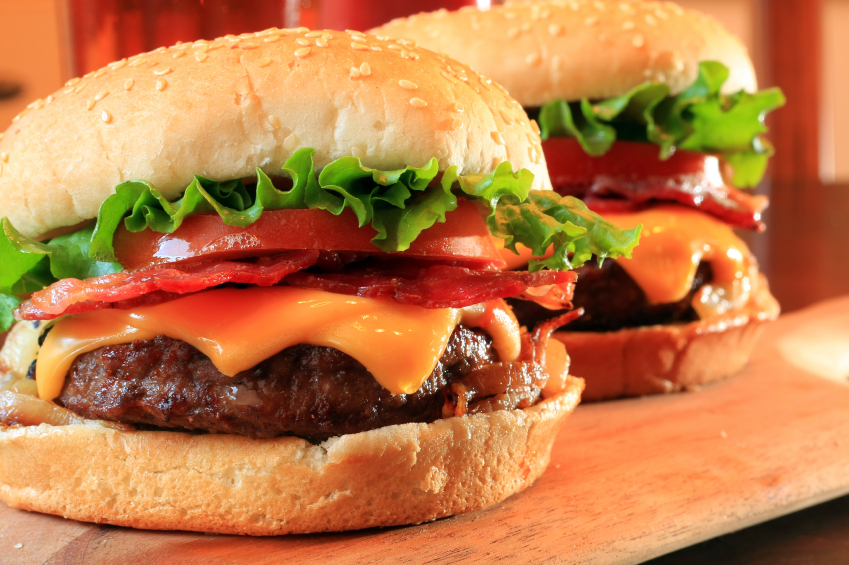

Restaurante de Hamburguesas

Escoge uno de los patrones siguientes para ver un demo de su funcionamiento:
Patrones de comportamiento:
Chain of responsibility
Command
Interpreter
Iterator
Mediator
Memento
Observer
State
Strategy
Template Method
Visitor
Patrones de construcción:
Abstract Factory
Builder
Factory Method
Prototype
Singleton
Patrones de estructuración:
Adapter
Bridge
Composite
Decorator
Facade
Flyweight
Proxy
Referencias y créditos
Ramirez Vasquez Luis Fernando - 2017